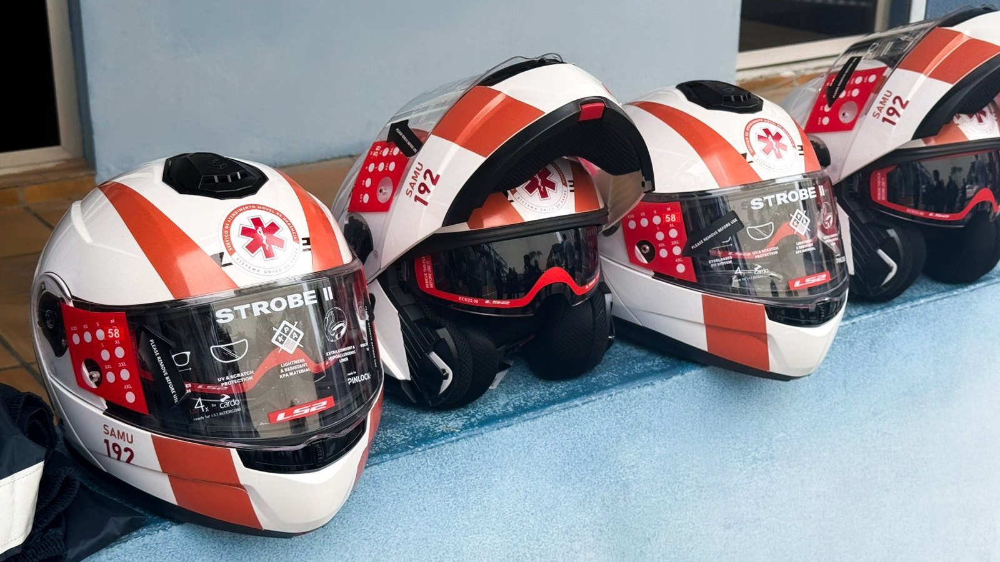

Lei sancionada nesta quarta leva o remédio que desfaz coágulo para UPA e Samu no país inteiro
O socorro que começa fora do hospital ganhou mais uma ferramenta.
A Prefeitura entregou nesta sexta desfibrilador compacto para as motos, torniquete homologado, capacete e bolsa de atendimento pré-hospitalar. Somando as duas motolâncias de julho, o SAMU da cidade recebeu mais de R$ 380 mil em 2026. A nota não diz de onde saiu o dinheiro.
Em 30 segundos · Modo de Leitura, formato original Santa Informa
A Prefeitura de Itapema entregou mais de R$ 300 mil em equipamento para o SAMU.
Foi na sexta-feira, 4 de setembro.
Entre os itens vão desfibriladores compactos.
Eles cabem na motolância, a moto de socorro.
Entraram também torniquetes homologados.
E capacete, luva, joelheira, bota e capa de chuva.
Mais bolsas de atendimento pré-hospitalar.
Em julho, o SAMU já tinha ganho duas motolâncias.
Custaram cerca de R$ 80 mil, por emenda parlamentar.
Somando os dois anúncios, passa de R$ 380 mil no ano.
Itapema foi a primeira cidade de SC a usar motolância.
Começou em janeiro de 2024.
A moto chega em cerca de 5 minutos.
A ambulância leva perto de 30 minutos no trânsito.
A Prefeitura não informou de onde veio o recurso.
Poder PúblicoPublicada em Redação Santa Informa

A Prefeitura de Itapema entregou nesta sexta-feira, 4 de setembro, mais de R$ 300 mil em equipamento novo para o SAMU. No lote vão desfibriladores externos automáticos em versão compacta, feitos para caber na motolância, a motocicleta que sai antes da ambulância. É o segundo reforço do ano: em julho, o serviço já tinha recebido duas motos novas.
Além dos desfibriladores compactos, a lista traz torniquetes homologados, capacetes, luvas, cotoveleiras, joelheiras, botas, capas de chuva, lanternas táticas e bolsas de atendimento pré-hospitalar. Metade dos itens é equipamento de proteção de quem trabalha, e a outra metade é material de socorro. Segundo a Prefeitura, o SAMU também recebeu recentemente uma nova ambulância e uniformes novos.
Em 10 de julho, a Prefeitura anunciou duas motolâncias compradas com emenda parlamentar, cerca de R$ 80 mil. Somando com a entrega desta sexta, o SAMU de Itapema aparece em anúncios oficiais com mais de R$ 380 mil em veículo e equipamento só em 2026. Antes disso, em julho de 2025, a cidade tinha recebido um desfibrilador e um monitor multiparamétrico, e a direção do serviço falava em nova ambulância comprada com prazo de entrega de 180 dias.
Itapema foi a primeira cidade de Santa Catarina a colocar motolância na rua, em janeiro de 2024. O argumento da época continua valendo aqui: a moto chega em torno de cinco minutos, contra perto de 30 minutos de uma ambulância presa no trânsito. Numa cidade que passou de 75.940 moradores no Censo de 2022 para 88.842 na estimativa do IBGE de 2026, e que enche mais ainda na temporada, quem chega primeiro costuma chegar de duas rodas. Colocar desfibrilador nessa moto muda o tipo de socorro que ela consegue fazer sozinha, e conversa direto com a lei que levou o remédio que desfaz coágulo para UPA e SAMU do país inteiro.
Desde fevereiro de 2025, Itapema abriga a 29ª Unidade de Suporte Avançado do SAMU em Santa Catarina, instalada pelo Governo do Estado na Rua 216, em Meia Praia. A base atende prioritariamente Itapema, Porto Belo e Bombinhas, dentro da macrorregião de Foz do Itajaí, que reúne 11 municípios. Na outra ponta do atendimento de urgência, o Hospital Santo Antônio abriu dez leitos de UTI no fim de agosto.
O resumo de 30 segundos está no topo e a versão completa é o texto acima. Aqui ficam as três leituras da casa sobre o mesmo assunto.
Clara, a otimista
Desfibrilador que cabe na moto é ganho de verdade. Parada cardíaca se resolve em minuto, não em quilômetro, e a motolância é justamente quem vence os minutos em rua cheia.
E tem o lado de quem trabalha. Capacete, joelheira, bota e capa de chuva não fazem manchete, mas são o que permite andar de moto em dia de temporal para atender chamado. Cuidar de quem socorre também é cuidar de quem é socorrido.
Seu Prudêncio, o criterioso
Merece atenção a falta de número na nota. Mais de R$ 300 mil é uma faixa, não um valor, e não se sabe quantos desfibriladores entraram nem quantas motolâncias estão rodando hoje. Equipamento de urgência se planeja por unidade, e a conta de quantos aparelhos para quantas motos é a informação que diz se o serviço ficou coberto.
Vale acompanhar duas pontas que ficaram para trás. A ambulância comprada em julho de 2025 tinha prazo de 180 dias, e o projeto da nova base do SAMU foi entregue à Secretaria de Saúde na mesma época. Uma sugestão útil seria a Prefeitura dizer, junto com a entrega, em que pé cada uma dessas está.
Dito isso, a escolha é acertada. Equipar quem chega primeiro rende mais que qualquer outra compra na urgência, e trocar equipamento de proteção antes que ele se gaste é o tipo de manutenção que evita afastamento de servidor lá na frente.
Caco, o sarcástico
Itapema foi a primeira do estado a botar o SAMU em cima de uma moto. Não é pioneirismo à toa: é que a ambulância não passava.
Agora a moto ganhou desfibrilador. Falta só o trânsito ganhar juízo, mas esse não vem por emenda parlamentar.
Reclamação feita, dá para reconhecer o tamanho da coisa. Cinco minutos contra trinta é a diferença entre chegar e chegar tarde, e a cidade acertou em investir aí.
Fontes: Prefeitura de Itapema, publicada em 4 de setembro de 2026, de onde saem o valor de mais de R$ 300 mil, a lista de equipamentos, os desfibriladores compactos para motolância e a menção à nova ambulância e aos uniformes. As duas motolâncias de cerca de R$ 80 mil, compradas com emenda parlamentar, estão em nota da Prefeitura de 10 de julho de 2026. O desfibrilador e o monitor multiparamétrico de 2025, a ambulância com prazo de 180 dias e o projeto da nova base vêm de nota de 16 de julho de 2025. O pioneirismo da motolância em Santa Catarina e a comparação de 5 e 30 minutos estão em nota de 22 de janeiro de 2024. A 29ª Unidade de Suporte Avançado, o endereço na Rua 216 e os 11 municípios da macrorregião de Foz do Itajaí saem de nota de 5 de fevereiro de 2025. A população de Itapema é a estimativa do IBGE para 2026, reunida no nosso Raio-X da Região. A foto do topo é divulgação da Prefeitura de Itapema.
O socorro que começa fora do hospital ganhou mais uma ferramenta.
 Itapema · Saúde
Itapema · SaúdePara onde a urgência da cidade encaminha o caso grave.
No feriado, o SAMU segue atendendo pelo 192.